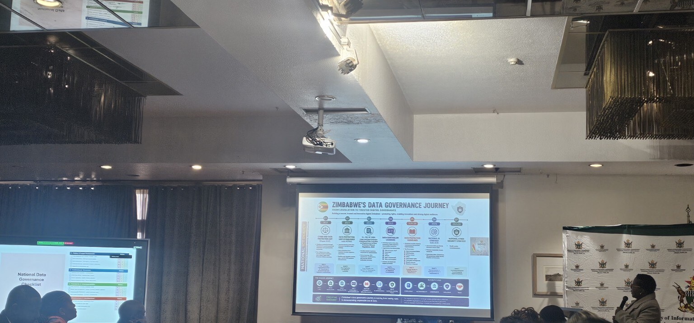

Southern Africa does not lack declarations about the value of data. The harder question is whether public institutions possess the mandates, roles, controls and continuity required to govern data from planning to disposal. The Harare workshop suggested that the region's next frontier is institutional hosting; building organisations capable of carrying governance principles through daily administrative practice.
When governance became concrete
The most revealing moments in Harare did not occur when data governance was described at a high level. They came when participants had to place actual institutions beside actual responsibilities. Who is accountable at the planning stage? Who must be consulted before data is collected? Who can authorise sharing? Who reviews the risks created by analysis? Who decides when data should be archived or securely destroyed? Once those questions became concrete, data governance stopped being a policy label and became what it has always needed to be; an architecture of public administration.
The Southern Africa Regional Workshop on Data Governance in the Digital Age: Data Policy Harmonisation took place at Rainbow Towers Hotel in Harare from 12 to 14 August 2026. It was jointly organised by the Smart Africa Secretariat and Smart Africa Digital Academy, UNESCO, and the Government of Zimbabwe through the Ministry of ICT, Postal and Courier Services and POTRAZ. Over three days, lectures, self assessments, stakeholder mapping, RACI exercises, lifecycle analysis, country exchanges and roadmap sequencing moved the discussion from broad ambition to implementation.
The workshop was organised around the UNESCO Data Governance Toolkit: Navigating Data in the Digital Age, developed through the Broadband Commission Working Group jointly chaired by UNESCO, UNDP, ITU and the African Union. Its structure is deceptively simple: WHY defines purpose; HOW identifies the principles that should govern decisions; WHO locates people, institutions and processes; and WHAT addresses practices across the data lifecycle. The value of that structure lies in the chain it creates. It prevents data policy from being treated as a technical document detached from public purpose, human rights and institutional responsibility.
The chain from purpose to practice
Each element depends on the others. Purpose without principles permits opportunistic uses of data. Principles without responsible people and processes remain aspirational. Roles without operating practices become ceremonial. Practices without a clear public purpose can produce technically compliant systems that generate little public value. The framework is therefore strongest when read as one institutional chain rather than four independent policy chapters.
In government, however, the links in that chain often sit in different bureaucratic rooms. A statistics office may own standards and classifications. An ICT ministry may lead infrastructure and interoperability. A data protection authority oversees privacy. Sector ministries determine use cases. Procurement officials negotiate contracts. National archives govern preservation and disposal. Local authorities and frontline institutions generate much of the data. Development partners and private vendors may design or operate the systems through which that data moves. The governance problem is not simply that these actors are numerous. It is that their mandates can overlap while responsibility for the whole chain remains unassigned.
The institutional silence in many data governance frameworks is not a lack of principles. It is the absence of a durable administrative host capable of carrying those principles across the full lifecycle.
The institutional silence between policy and implementation
Many data strategies make an assumption they rarely test: that an institution already exists with the authority and capacity to convert the framework into continuing administrative conduct. The RACI exercise exposed this assumption. Assigning one accountable actor to a task sounds straightforward until several institutions claim partial authority, while none possesses the mandate, information, budget or leverage to control the outcome. In public administration, shared responsibility can easily become diffused accountability.
This is where the work of the Africa Governance and Civic Innovation Hub (AGCIH) on Institutional Governability and Administrative Hosting Capacity becomes relevant. Institutional Governability asks whether a public institution can lawfully direct, supervise, contest, correct and sustain technology mediated systems and their effects across time. Administrative Hosting Capacity concerns the institution's ability to retain lawful operational control once public authority is mediated through data, digital infrastructure, platforms or automated systems. Applied to data governance, this does not require creating a new institution for every problem. It requires identifying the administrative host and equipping it to perform the work.
- Mandate. Can the institution define the lawful purpose of a data initiative and stop uses that exceed it?
- Ownership. Are accountable officials named for decisions at each lifecycle stage, with escalation routes when mandates overlap?
- Operating controls. Can principles be translated into approvals, impact assessments, access rules, metadata standards, sharing agreements, retention schedules and audit records?
- External control. Can the institution question vendors, audit systems, enforce contractual safeguards, recover data and exit a failing arrangement?
- Continuity. Will governance survive staff turnover, project closure, budget pressure, technological change and political transitions?
Administrative hosting is not bureaucracy for its own sake. It is the mechanism that prevents authority over public data from migrating quietly to technical teams, contractors or platforms that do not carry the same public obligations.
Planning is already governance
Our earlier lifecycle work focused closely on planning. That stage is sometimes treated as preparation before the real work begins. In fact, many of the most consequential governance decisions are made before a single record is collected. Planning determines the purpose, legal basis, populations affected, minimum data required, categories of risk, standards for quality and interoperability, consultation duties, anticipated sharing, retention period, disposal method, procurement conditions and resources needed for oversight.
When those matters are left vague, later safeguards become expensive retrofits. A consent notice cannot cure a purpose that was never properly defined. Encryption cannot correct the collection of unnecessary data. A data sharing agreement cannot repair incompatible classifications. An audit cannot reconstruct decisions that were never documented. Good planning reduces the likelihood that institutions will spend the rest of the lifecycle managing avoidable governance debt.
The discussion of disposal was especially important. Decisions at the end of the lifecycle are often treated as an IT housekeeping matter, but they are not. Retaining data beyond its purpose can create privacy, security and function creep risks. Destroying it too early can violate public records obligations, erase evidence needed for accountability or weaken institutional memory. Secure disposal therefore requires a documented decision that reconciles data protection, archival value, audit needs, legal holds, vendor copies, backups and any downstream models trained on the data. The lifecycle does not end when a project closes. It ends when the institution can account for what remains.
The education divide is also a data governance divide
In our group exercise, we used the digital divide in education as the test case. The immediate barriers were familiar; unreliable connectivity, limited electricity, unaffordable devices, uneven digital skills and inadequate accessible content. Yet the exercise revealed a second divide. Institutions may not possess reliable, comparable and disaggregated data showing which schools have meaningful connectivity, whether devices are usable, whether teachers are supported, whether platforms are accessible to learners with disabilities, and whether access produces better educational outcomes.
There is a serious visibility problem. Schools that are least connected are also least likely to generate the digital traces used in dashboards and planning systems. If allocation decisions rely heavily on platform activity or online reporting, the institutions easiest to measure can appear to be the institutions most deserving of investment. Data driven planning may then reinforce the advantage of schools that are already connected while the least visible remain excluded. Better governance must therefore combine digital data with offline reporting, community knowledge, local verification and deliberate disaggregation by location, gender, disability and household circumstance.
The same initiative that seeks to close the divide can create new harms. Education systems may combine identity, attendance, performance, disability and household data. Private platforms may collect behavioural information that schools and parents do not fully understand. Weak consent, indefinite retention, profiling and secondary commercial use can turn inclusion programmes into systems of surveillance. Children require stronger safeguards, not weaker ones, simply because the stated purpose is educational.
The African Union's Digital Education Strategy and Implementation Plan for 2023 to 2028 links digital adoption in education with skills and infrastructure. Data governance is the connective tissue between those priorities. It allows public authorities to determine who is benefiting, who remains excluded, whether vendors are meeting public requirements and whether the data used to close the divide is itself generating unequal treatment. Bridging the education divide cannot therefore be reduced to distributing devices. It requires institutions capable of assessing meaningful access, educational value and rights impacts over time.

Harmonisation should create a floor of trust
Regional harmonisation is necessary because the systems that shape digital education and public data do not stop at national borders. Cloud providers, telecommunications companies, learning platforms, content services, vendors, credentials and data flows operate across jurisdictions. Fragmented requirements increase costs for public institutions, make responsible exchange difficult and allow providers to exploit the weakest contractual or regulatory environment. The African Union Data Policy Framework already recognises the need to strengthen and harmonise governance while protecting rights and enabling responsible value creation.
For Southern Africa, harmonisation should establish a common minimum floor. That floor could include shared terminology and classifications, comparable inclusion indicators, metadata and interoperability requirements, safeguards for children's and other sensitive data, minimum clauses for public procurement, rules for cross border transfers, incident reporting expectations, model data sharing agreements and mechanisms for recognising qualifications and learning records. These measures would make cooperation safer and reduce the need for every institution to invent its own basic controls.
Harmonisation should not mean identical national laws, a single regional database or the transfer of authority to one centre. Countries retain different constitutional arrangements, institutional structures, languages and development priorities. A federated approach is more appropriate because it allows national institutions to retain control of their data and lawful mandates while adhering to common standards that enable trust, portability and accountable exchange. Regional alignment should reinforce public authority, not flatten it.
Regional harmonisation should create a shared floor of trust, not a single centre of control.
Sequence the roadmap: do not begin with the platform
Technology first implementation is tempting because a platform, portal or data centre is visible. Institutional capacity is less visible and often takes longer to build. Yet purchasing technology before agreeing on purpose, authority, standards and safeguards creates governance debt that becomes harder to correct once systems are integrated and contracts are signed. The workshop's roadmap exercise correctly required participants to distinguish what must happen first, next and later.
A sequenced roadmap for institutionalising data governance
| Phase | Priority actions | Decision gate |
|---|---|---|
| First 12 months | Assign a lead institution and formal mandates; complete a data inventory and maturity baseline; agree minimum standards for metadata, interoperability, child data protection, retention, disposal and procurement; select underserved areas for controlled pilots. | Authority, evidence and safeguards are in place before major procurement or integration. |
| Months 13 to 24 | Operationalise data sharing agreements, impact assessments, access controls, audit logs and vendor clauses; pilot interoperable systems and inclusion measures; train data stewards, teachers, administrators and procurement teams; conduct regional peer review. | Pilots demonstrate lawful operation, inclusion, security and measurable educational value. |
| After month 24 | Independently evaluate outcomes; scale only what works; institutionalise budgets, maintenance, cybersecurity, remedy and secure disposal; deepen regional interoperability and revise standards as AI and learning analytics evolve. | Scale is supported by evidence, durable capacity and continuing public accountability. |
The sequencing principle is straightforward: governance and evidence first; controlled implementation second; wider deployment only after inclusion, safety, sustainability and public value have been demonstrated. This does not require waiting for perfect institutions before acting. It requires matching the scale and risk of implementation to the institution's present ability to govern it. A limited pilot with strong oversight can build capacity. A national rollout without accountable ownership can magnify uncertainty.
Follow up support must build institutional hosts
Regional workshops are valuable when they create a common language, expose implementation gaps and build relationships among practitioners. Their effect is limited, however, if participants return to institutions that lack a mandate, budget or mechanism for applying what was learned. Follow up support should therefore be judged by whether it strengthens the administrative host, not simply by the number of people trained.
- Country focal mechanism. Each participating country needs an institution and senior official responsible for convening the relevant ministries, regulators, statistics bodies, archives, procurement authorities and sector actors.
- Implementation pack. Shared templates should cover RACI assignments, impact assessments, data inventories, sharing agreements, metadata, retention schedules, incident response and vendor clauses.
- Targeted assistance. Technical support should respond to a diagnosed institutional gap, such as missing authority, weak interoperability, inadequate records management or lack of procurement leverage, rather than deliver generic training.
- Peer review. Regular regional reviews can compare progress, test the practicality of common standards and identify where national experimentation offers lessons for others.
- Sustained resourcing. Pilot finance should be paired with domestic budget planning for staff, maintenance, cybersecurity, accessibility, independent assurance and remedy.
Communities of practice can help public servants solve recurring problems, but they cannot substitute for formal authority. Training can improve skill, but it cannot create a budget line or compel a vendor to provide audit access. The support architecture must therefore connect learning with mandate, procedure, finance and oversight.
A different measure of progress
The number of frameworks adopted is an incomplete measure of progress. A more demanding assessment would ask whether institutions can explain the purpose of a data initiative, identify one accountable actor for each critical decision, demonstrate how risks were assessed, show who has access, trace how data changed, enforce contractual safeguards, receive and resolve complaints, correct errors, and account for retention, archival preservation or secure disposal.
It would also ask whether governance survives time. Can the institution maintain control after the consultant leaves, the donor project closes, the responsible official is transferred, the vendor changes its product, the dataset is repurposed or a new AI application is attached to the system? Data remains governable only when responsibility, records, technical access and corrective authority remain available across those transitions.
The Harare workshop supplied practical methods for moving from purpose to principles, from stakeholder maps to accountable roles, and from lifecycle risks to sequenced action. The next responsibility is both national and regional. Countries must assign administrative hosts, equip them, test them through real use cases and make them answerable to the people whose data is being governed. Regional institutions and partners should reinforce that work through common minimum standards, peer learning and targeted implementation support.
Southern Africa's data governance agenda will become credible when it can survive the distance between a framework and a frontline decision. That distance is where rights can be lost, public value diluted and authority displaced. It is also where good institutions can make governance real. A framework becomes governance only when an institution can carry it.
Research provenance
This reflection forms part of the AGCIH Research Programme 2026 to 2030: Institutional Governability in the Age of Artificial Intelligence. It applies AGCIH's institutional method to authority, responsibility, dependency, contestability, remedy and continuity across the data lifecycle. Workshop observations are identified as such; the analysis and proposals are AGCIH's own.
Selected references and research materials
- UNESCO. Data Governance Toolkit: Navigating Data in the Digital Age. July 2025. The Toolkit provides the WHY, HOW, WHO and WHAT organising structure and lifecycle method used during the workshop.
- African Union. AU Data Policy Framework. 28 July 2022. This supplies the continental policy basis for data governance harmonisation, trusted exchange and responsible value creation.
- African Union. Digital Education Strategy and Implementation Plan 2023 to 2028. 25 November 2022. This provides the education sector context for infrastructure, skills and digital adoption.
- Workshop programme. Southern Africa Regional Workshop on Data Governance in the Digital Age: Data Policy Harmonisation, Harare, Zimbabwe, 12 to 14 August 2026. This documents the event schedule and workshop activities reflected upon in the article.
- Africa Governance and Civic Innovation Hub. AGCIH Research Programme 2026 to 2030: Institutional Governability in the Age of Artificial Intelligence. Internal working document, Version 0.2, 4 August 2026. This supplies the research methodology and institutional lens applied in the article.
Acknowledgements
The author gratefully acknowledges UNESCO, the Smart Africa Secretariat and Smart Africa Digital Academy, and the Government of Zimbabwe through the Ministry of ICT, Postal and Courier Services and POTRAZ for convening the Southern Africa Regional Workshop. Appreciation is also extended to fellow participants whose country experiences and group discussions enriched this reflection. The interpretations and proposals advanced in this article are those of the author and do not necessarily represent the views of the organisers or other participants.